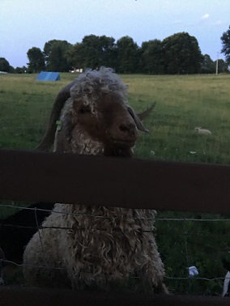
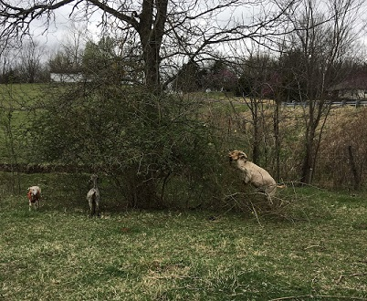
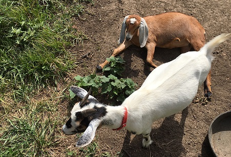

Variety we have
Meet our Angora, Nubian,and Pygmy goats. Generally speaking they all assist with one shared purposes. They consume the brush and leaves that the cows typically leave untouched.
Angora
 Our breeding pair will be used to start our own herd. We spin by had at this point but will be looking into spinning wheels here soon to be able to reduce the amount of time required to spin by hand.
Interesting Angora Facts
- originated in the district of Angora in Asia Minor
- most valuable characteristic is their mohair
- they average 5.3 pounds per shearing which is twice a year
- mohair is similar to wool but much smoother and thiner but very elastic
- mature bucks will weigh 180-225 pounds while does will only reach 70 to 110 pounds
- ringlet hair (C Type) is more desired than flat lock (B Type)
- typically graze as high as they can reach even on thier hind legs unlike sheep

Nubians
Our breeding pair will be used to build our own herd. We curently purchase goat milk but have plans to produce enough milk for our table. Additionally we use the milk to make goat cheese and soaps as well.
Intresting Nubian Facts
- also known as Anglo-Nubians
- known for high average butter fat content milk and meat
- mature bucks stand 35 inches at the withers and weigh 175 pounds or more
- mature does stand at least 30 inches at the withers and weigh 135 or more
- know for their "aristocratic" look and long ears
- gentle and even tempered giants
Pygmy
Well these goats were our gateway animals. They are domesticated and are good pets. They like the other goats do focus more on the brush and have quite the personality.
Intresting Pygmy Facts
- females weigh 50-75 pounds and average 16 inches tall
- females weigh 60-85 pounds and average 23 inches tall
- able to leap very high
- they are know to swim if a body of water is available